The Amazing Spider-Man
Человек-паук — супергерой, обладающий сверхчеловеческой силой, ловкостью и способностью взбираться по стенам. Он использует свои способности, чтобы защищать людей и бороться с преступностью.
.jpg)

About Spider-Man
Spider-Man is one of Marvel's most iconic superheroes.
-
🕷️ Super Strength
Повышенная физическая сила и мощные рефлексы.
-
🕸️ Wall-Crawling
Способность карабкаться и передвигаться по стенам.
-
⚡ Spider-Sense
Особый инстинкт, предупреждающий Человека-паука об опасности.
Movies
-
Spider-Man: Homecoming
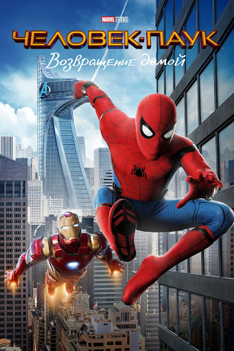
Первым сольным фильмом Тома Холланда в роли супергероя стала картина Человек-паук: Возвращение домой 2017 года. Школьник Питер Паркер пытается совмещать обычную жизнь подростка в Нью-Йорке с борьбой с преступностью под наставничеством Тони Старка. Он пытается доказать, что достоин быть частью команды Мстителей, и вступает в противостояние с опасным злодеем по имени Стервятник.
-
Spider-Man: No Way Home
.jpg)
Человек-паук: Нет пути домой тайна личности Питера Паркера раскрыта, и он просит Доктора Стрэнджа заклинанием вернуть всё назад. Из-за ошибки в заклинании открывается мультивселенная, и в их мир попадают злодеи и альтернативные версии Человека-паука из прошлых франшиз. Питеру приходится пройти через тяжелые потери и исцелить врагов, а в финале пожертвовать всем, чтобы мир забыл о его существовании.
-
Spider-Man: New Day
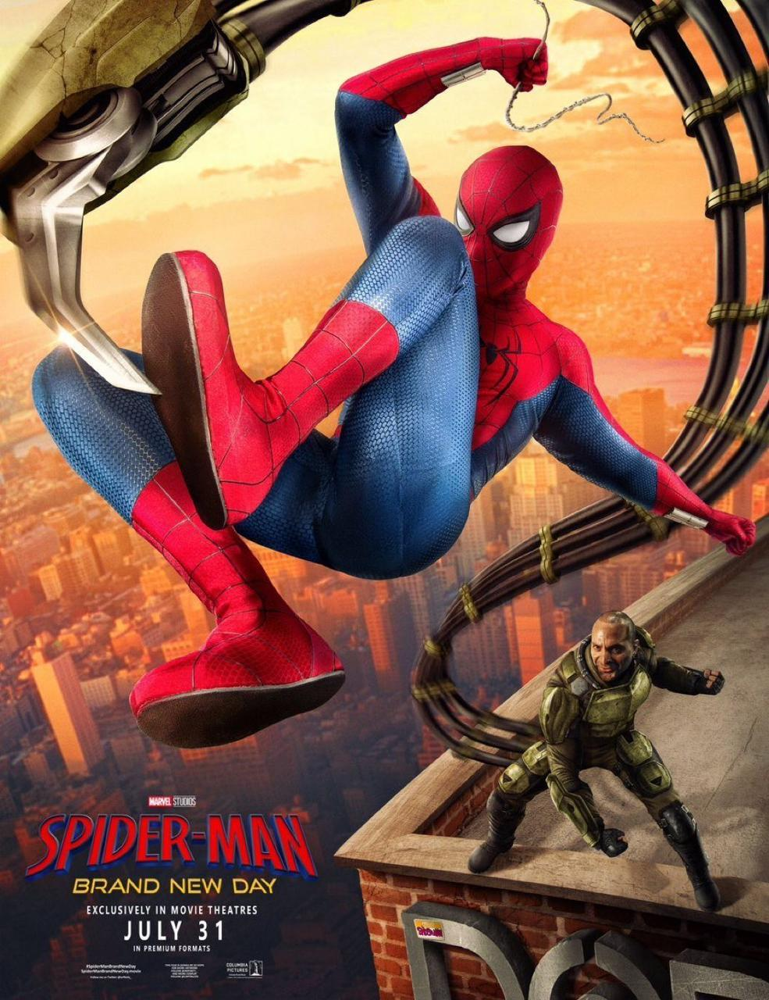
Фильм «Человек-паук: Новый день» рассказывает о жизни Питера Паркера спустя четыре года после событий картины «Нет пути домой», когда все забыли о его существовании. Действуя в Нью-Йорке в качестве одинокого и безымянного защитника, он расследует серию мелких преступлений и случайно выходит на масштабный криминальный заговор. Эта более приземленная история сосредоточена на взрослении героя и столкновении с последствиями его прошлых решений без использования концепции мультивселенных.
Gallery
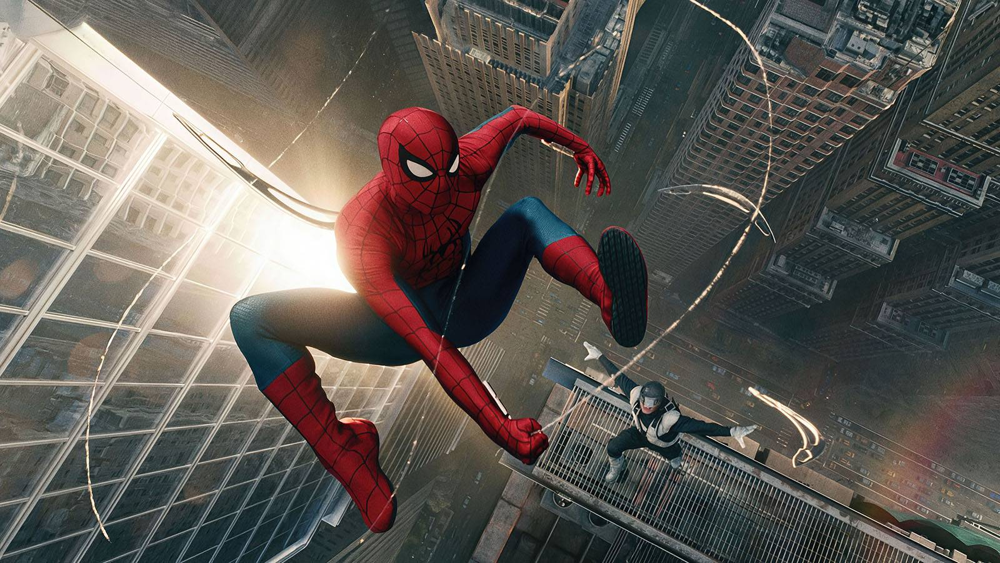
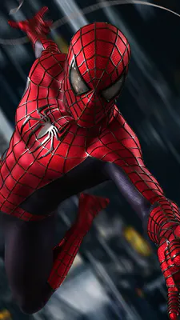
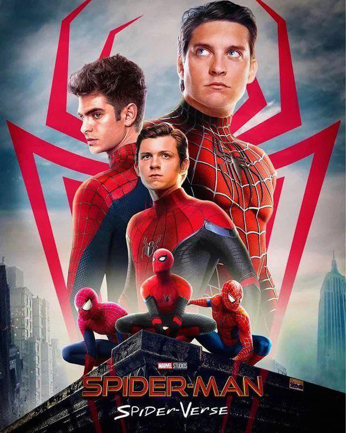
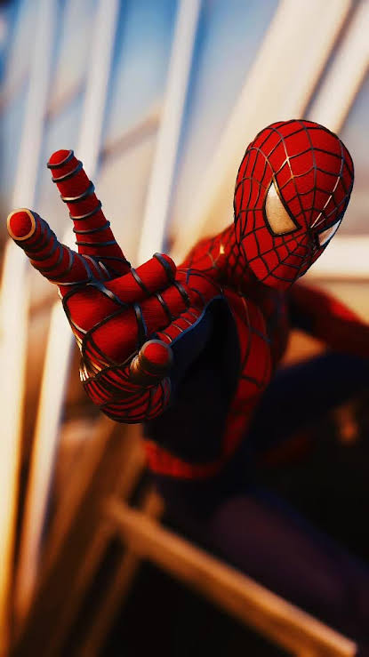
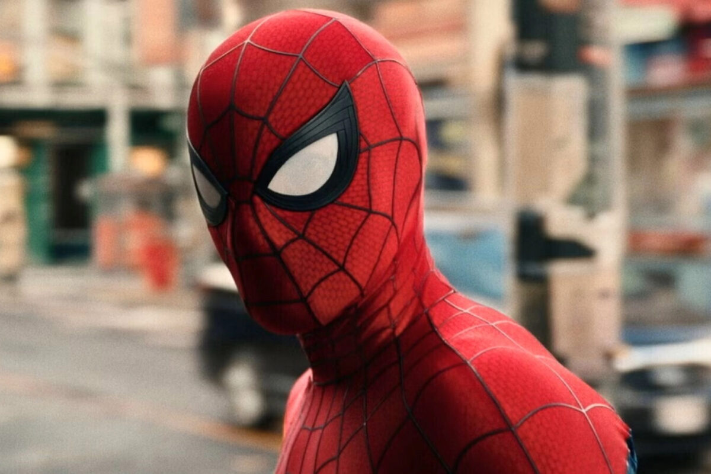

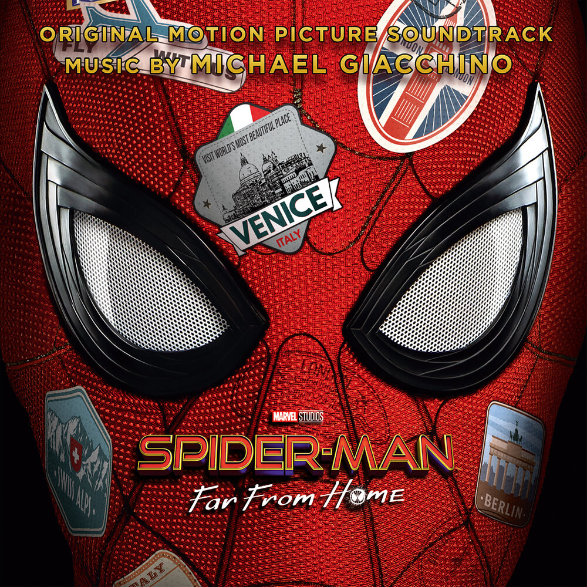
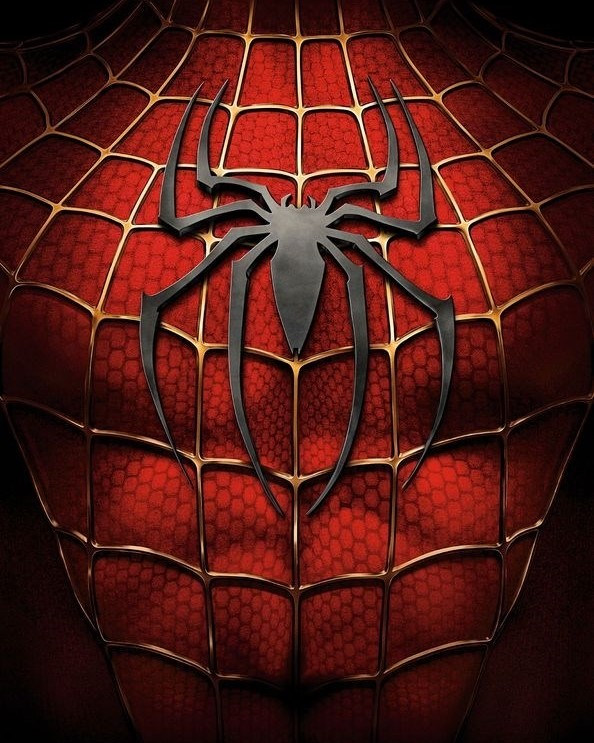
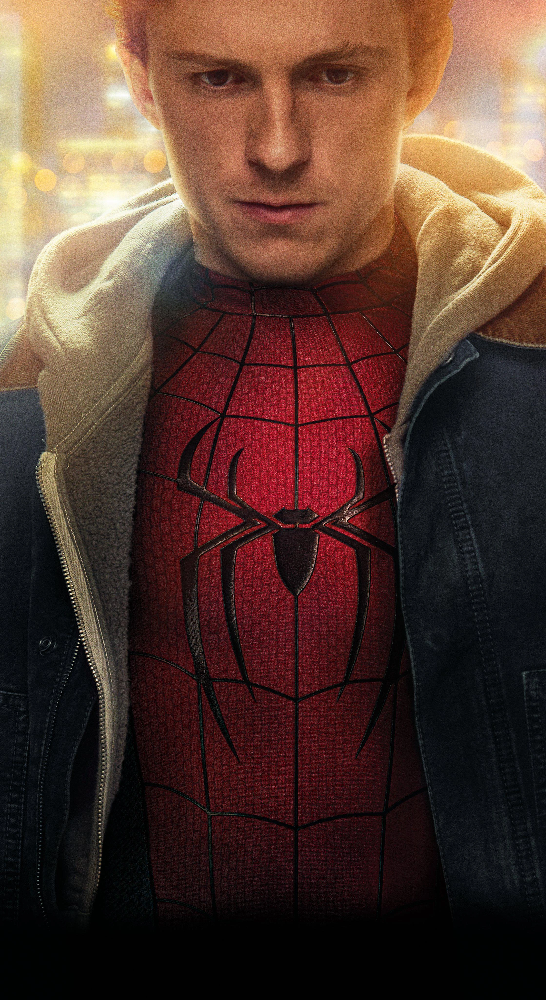
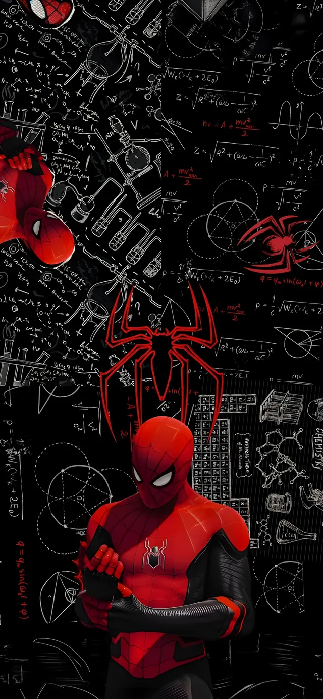
.jpg)
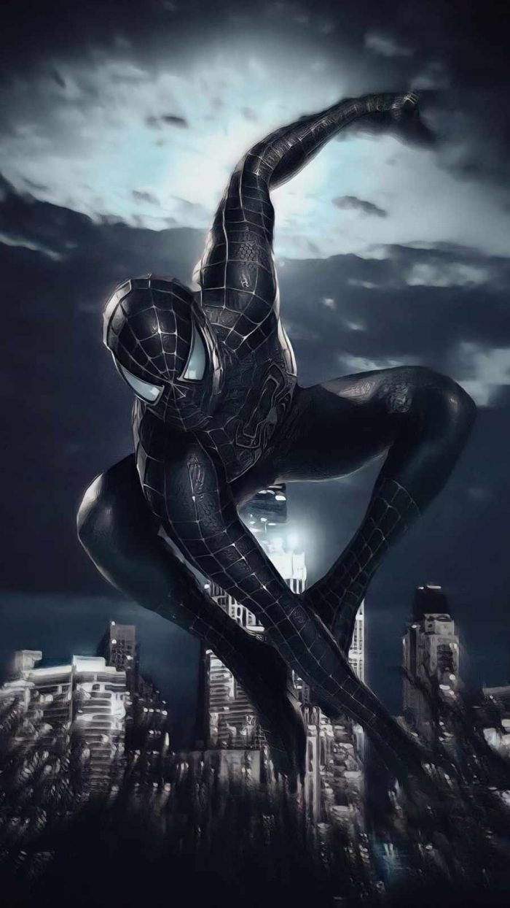
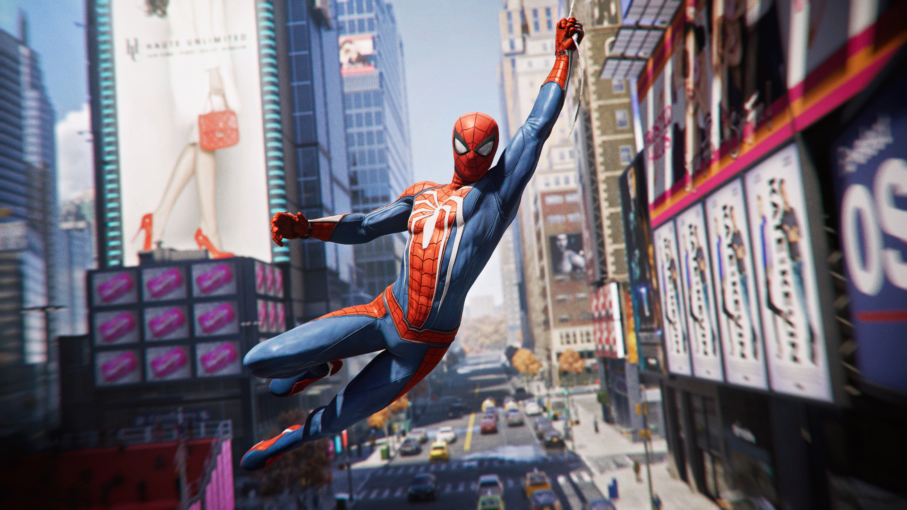
Contact
Есть вопросы или хочешь узнать больше о Spider-Man?
Напиши нам, и мы
обязательно
ответим.